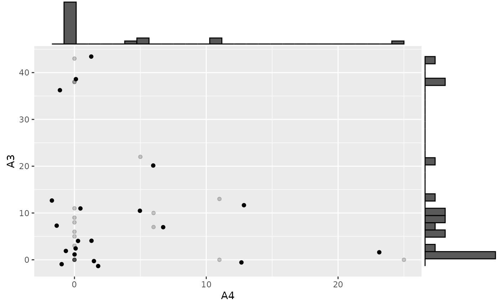
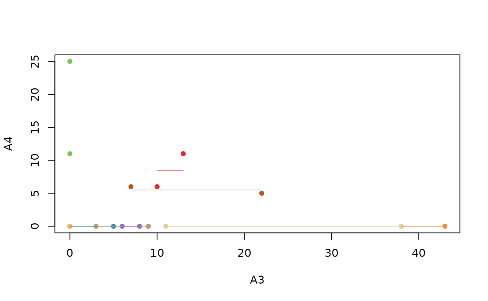
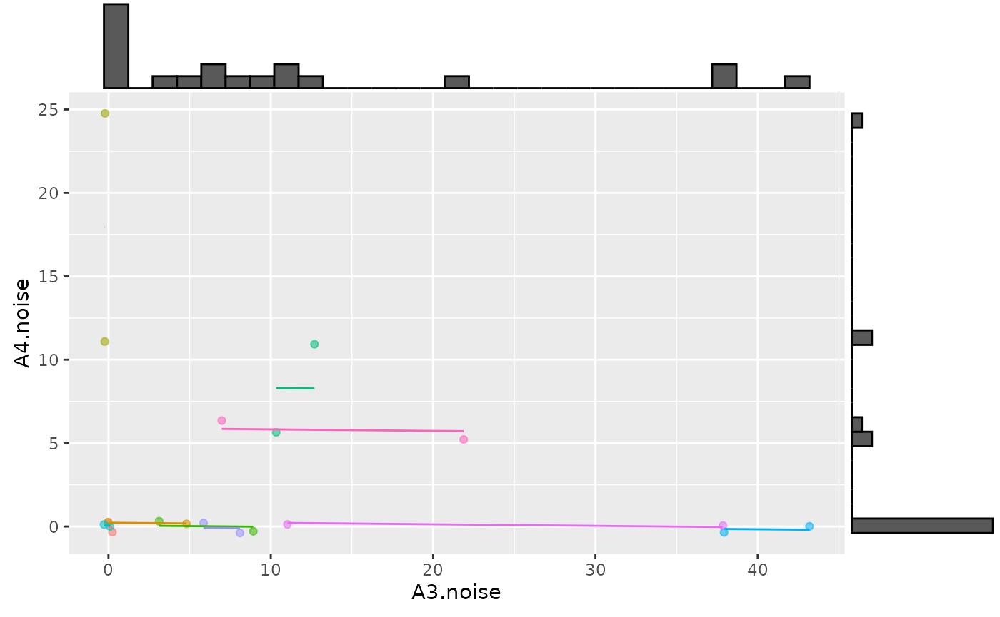

rmcorr Estimates with NaN
Jonathan Bakdash and Laura Marusich
2024-08-14
Source:vignettes/estimates_w_NaN.Rmd
estimates_w_NaN.RmdNaN estimates
This synthetic dataset produces NaN estimates with rmcorr. Thanks to Shreya Ghosh for this example.
Running Examples Requires ggExtra (Attali and Baker 2022)
install.packages("ggExtra")
require(ggExtra)Load data, visualize, and model
load(file = "../man/data/ghosh_synth.rda")
#Look at data
ghosh_synth #Note lots of repeated zeros in A3 and A4
#> Subject TP A1 A3 A4 A5 A6
#> 1 1 1 0 0 0 11 0
#> 2 1 2 0 0 0 3 0
#> 3 2 1 0 5 0 2 0
#> 4 2 2 0 0 0 16 0
#> 5 3 1 72 0 11 0 0
#> 6 3 2 161 0 25 0 0
#> 7 4 1 54 9 0 10 0
#> 8 4 2 30 3 0 2 0
#> 9 5 1 0 10 6 0 33
#> 10 5 2 0 13 11 0 106
#> 11 6 1 0 0 0 0 0
#> 12 6 2 0 0 0 0 0
#> 13 7 1 0 43 0 8 0
#> 14 7 2 0 38 0 18 0
#> 15 8 1 8 8 0 0 0
#> 16 8 2 0 6 0 0 45
#> 17 9 1 0 38 0 0 48
#> 18 9 2 0 11 0 0 99
#> 19 10 1 28 22 5 0 0
#> 20 10 2 0 7 6 0 151
set.seed(40) #Make jittering reproducible
p <- ggplot(ghosh_synth, aes(x = A4, y = A3)) +
geom_point(alpha = 0.2) +
geom_jitter(width = 2, height = 2)
p1 <- ggMarginal(p, type="histogram")
p1
rmc.ghosh <- rmcorr(Subject, A3, A4, ghosh_synth)
#> Warning in rmcorr(Subject, A3, A4, ghosh_synth): 'Subject' coerced into a
#> factor
rmc.ghosh
#>
#> Repeated measures correlation
#>
#> r
#> 0
#>
#> degrees of freedom
#> 9
#>
#> p-value
#> 1
#>
#> 95% confidence interval
#> -0.599875 0.599875
#The default rmcorr plot doesn't jitter values, this masks identical values because they are drawn on top of each other
plot(rmc.ghosh)
The NaN estimates appear to be due to insufficient varability in the dataset. A possible way to address this issue is adding a small amount of random noise.
Add random noise
set.seed(67)
small.noise1 <- rnorm(dim(ghosh_synth)[[1]], 0, 0.2)
small.noise2 <- rnorm(dim(ghosh_synth)[[1]], 0, 0.2)
ghosh_synth$A3.noise <- ghosh_synth$A3 + small.noise1
ghosh_synth$A4.noise <- ghosh_synth$A4 + small.noise2
rmc.ghosh.noise <- rmcorr(Subject, A3.noise, A4.noise, ghosh_synth)
#> Warning in rmcorr(Subject, A3.noise, A4.noise, ghosh_synth): 'Subject' coerced
#> into a factor
rmc.ghosh.noise
#>
#> Repeated measures correlation
#>
#> r
#> -0.02006963
#>
#> degrees of freedom
#> 9
#>
#> p-value
#> 0.9532957
#>
#> 95% confidence interval
#> -0.6125697 0.5868709
p2 <- ggplot(ghosh_synth, aes(x = A3.noise, y = A4.noise,
group = factor(Subject), color = factor(Subject))) +
ggplot2::geom_point(ggplot2::aes(colour = factor(Subject),
alpha = 0.10)) +
ggplot2::geom_line(aes(y = rmc.ghosh.noise$model$fitted.values),
linetype = 1) +
theme(legend.position="none")
p3 <- ggMarginal(p2, type="histogram")
p3
Caveats
The results with rmcorr should be interpreted with some caution because the data are non-normal with zero-inflation. Still, these results provides at least a starting point: A common linear association around 0. A much more complicated alternative is fitting a multilevel model with an appropriate distribution for zero-inflated data (e.g., negative binomial distribution or zero-inflated Poisson).
Attali, Dean, and Christopher Baker. 2022. ggExtra: Add Marginal
Histograms to ’Ggplot2’, and More ’Ggplot2’ Enhancements. https://CRAN.R-project.org/package=ggExtra.